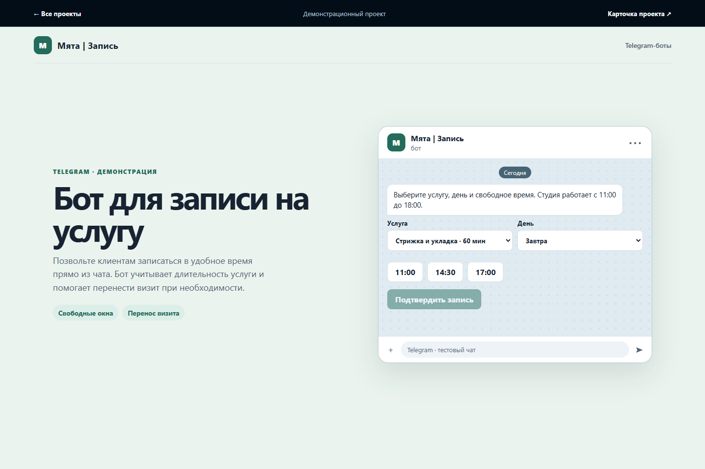
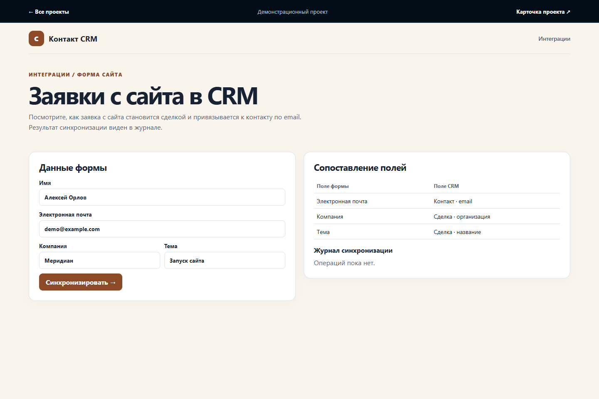
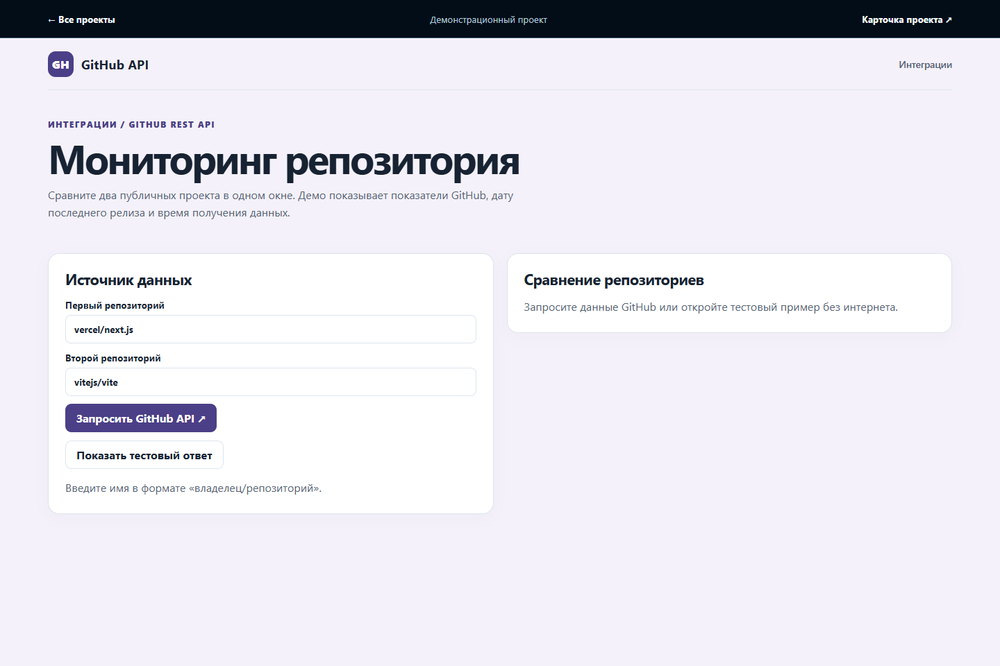

Сайты
Запустим лендинг, сайт компании или каталог, где клиент найдёт нужную услугу и сможет оставить заявку.
Помогаем принимать заявки, записывать клиентов и передавать данные в CRM без ручного переноса. Подберём решение под ваш процесс, покажем прототип и запустим проект.
Выбрать услугу ↓Запустим лендинг, сайт компании или каталог, где клиент найдёт нужную услугу и сможет оставить заявку.
Настроим бота, который ответит на частые вопросы, запишет клиента или поможет оформить заказ в чате.
Настроим распределение заявок, уведомления для сотрудников и регулярные отчёты.
Сделаем помощника, который ищет ответы в ваших документах или готовит черновики для поддержки.
Свяжем сайт или бота с Битрикс24, другой CRM или сервисом, которым уже пользуется ваша команда.
Разработаем кабинет, панель заказов или другой инструмент под то, как работает ваша команда.
Узнаём, что вы хотите улучшить, кто будет пользоваться решением и какие сервисы уже есть.
Показываем, как будет работать решение, и согласуем, что входит в проект.
Проверяем рабочие сценарии и передаём вам готовый проект с инструкцией.
В каждом примере можно пройти сценарий, который пригодится в вашем бизнесе. Попробуйте оставить заявку, перенести запись или посмотреть, как данные попадают в CRM.

Бриф с типом помещения, площадью и бюджетом. Заявку можно проверить и исправить перед отправкой.
Открыть демо ↗Описание и скриншоты
Каталог из четырёх объектов с фильтрами. В карточке есть площадь, список работ, галерея и этапы.
Открыть демо ↗Описание и скриншоты
Поиск и сортировка товаров, редактирование корзины и сводка стоимости заказа.
Открыть демо ↗Описание и скриншоты
Ветки по услугам, уточняющие вопросы и карточка заявки с перепиской для менеджера.
Открыть демо ↗Описание и скриншоты
Выбор услуги и дня, расчёт свободных окон по длительности и перенос записи.
Открыть демо ↗Описание и скриншоты
Корзина из нескольких товаров, счёт и повтор тестового платежа после ошибки.
Открыть демо ↗Описание и скриншоты
Назначение ответственного по услуге, проверка дублей и повтор обработки с остановившегося шага.
Открыть демо ↗Описание и скриншоты
Выбор диапазона дат, сравнение периодов, предпросмотр сообщения для Telegram и выгрузка CSV.
Открыть демо ↗Описание и скриншоты
Поиск по документам, цитаты со ссылками на разделы и подсказка при отсутствии ответа.
Открыть демо ↗Описание и скриншоты
Тема и срочность обращения, редактируемый черновик и очередь оператора.
Открыть демо ↗Описание и скриншоты
Поиск контакта по email, создание или привязка контакта и журнал синхронизации.
Открыть демо ↗Описание и скриншоты
Выбор воронки и стадии, JSON-запрос и сценарии ошибок доступа и лимита.
Открыть демо ↗Описание и скриншоты
Сравнение двух публичных репозиториев, даты последних релизов и время обновления.
Открыть демо ↗Описание и скриншоты
Создание заказа, назначение ответственного, фильтры и история изменений.
Открыть демо ↗Описание и скриншоты